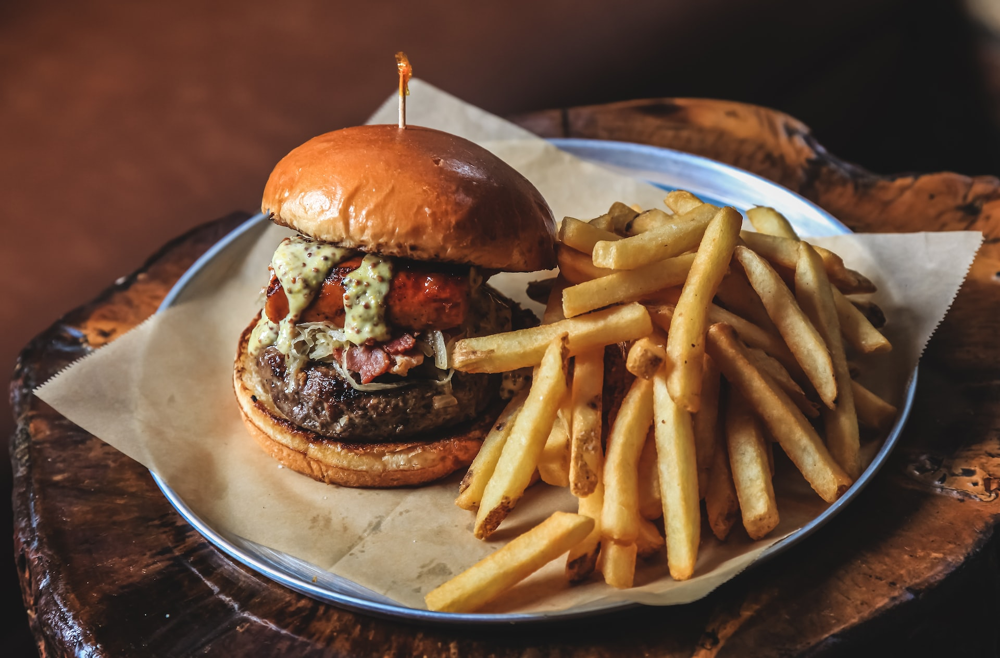
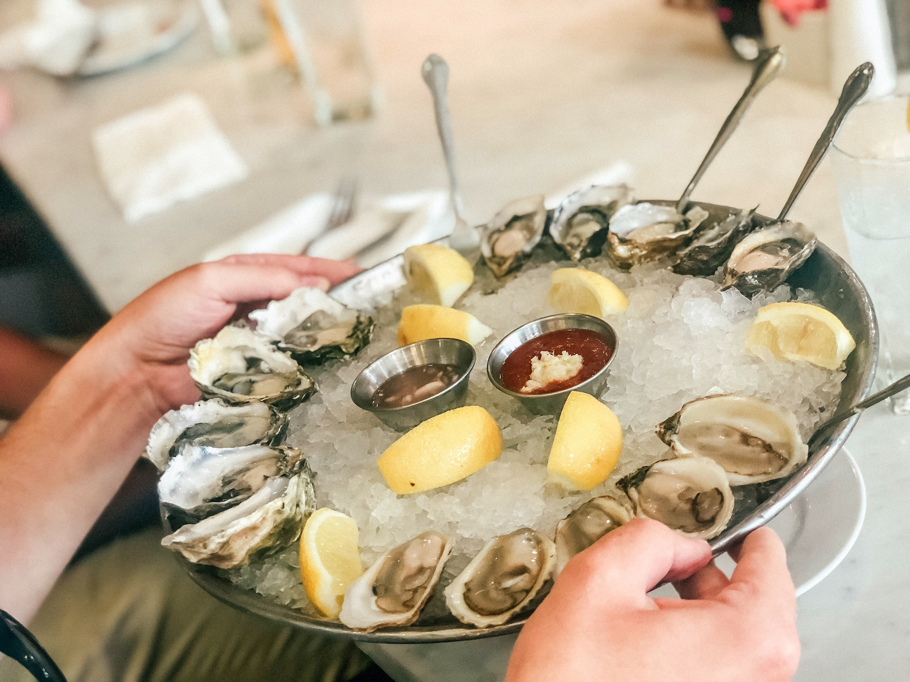
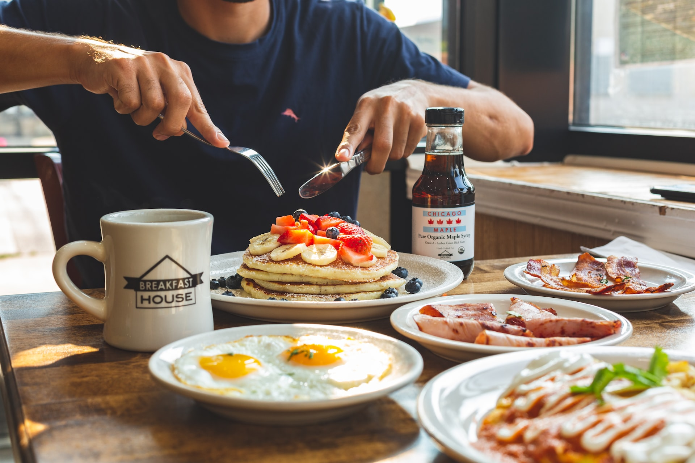

What To Eat

Island Burger and Bites
The go to spot for the best Burgers, Philly Cheesesteaks, Ice Cream and HotDogs on Pleasure Island!

Shucking Shack Oyster Bar
Driven by their love for sun, saltwater, oysters, and cold beer, two buddies opened the First Shuckin' Shack Oyster Bar. Gather here to enjoy fresh seafood, cold drinks, and a laid-back beach vibe.

Kate's Pancake House
Enjoy a popular locally owned breakfast spot serving southern breakfast favorites with a generous selection of pancakes, waffles, benedicts and more.